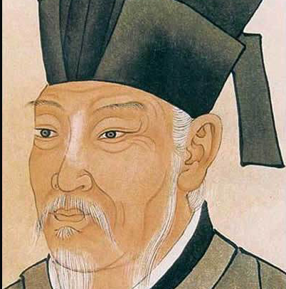

作者
-

李白
唐朝
李白（701年－762年） ，字太白，号青莲居士，又号“谪仙人”，唐代伟大的浪漫主义诗人，被后人誉为“诗仙”，与杜甫并称为“李杜”，为了与另两位诗人李商隐与杜牧即“小李杜”区别，杜甫与李白又合称“大李杜”。据《新唐书》记载，李白为兴圣皇帝（凉武昭王李暠）九世孙，与李唐诸王同宗。其人爽朗大方，爱饮酒作诗，喜交友。
-
白行简
唐朝
白行简（776年－826年）唐代文学家，字知退，下邽（今陕西渭南东北） [1] 人，生于河南郑城西的东郭宅（今城关乡东郭寺村）。 [2-3] 著名文学家白居易之弟。贞元末年（805年）进士，授秘书省校书郎，累迁司门员外郎，主客郎中，又曾任度支郎中，膳部郎中等职。著有文集10卷，文辞简易，有其兄风格。 元和13年（818年），白居易被贬为江州（今江西省九江市）司马，白行简与白居易在江州相聚。当白居易被任命为忠州刺史时，白行简也一同与兄长溯江而上。元和14年（819年），在前往忠州之途，白行简、白居易、和元稹三人在夷陵黄牛峡相会，同游长江西陵峡三游洞，吟诗作赋，被称为“三游洞摩崖”。现时宜昌市三游洞内仍有白行简、白居易和元稹三诗人的石像。 白行简后来又随白居易入朝，先后出任左拾遗、司门员外郎、主客郎中等职。 白行简文笔优美，著有《李娃传》、《三梦记》等唐人传奇。白行简所作《天地阴阳交欢大乐赋》由法国汉学家伯希和从敦煌石窟发现，带回巴黎；后又经荷兰外交家高罗佩翻译成英文，名闻世界。
-

白居易
唐朝
白居易（772年－846年），字乐天，号香山居士，又号醉吟先生，祖籍山西太原 [1-2] ，到其曾祖父时迁居下邽，生于河南新郑。 [3] 是唐代伟大的现实主义诗人，唐代三大诗人之一。白居易与元稹共同倡导新乐府运动，世称“元白”，与刘禹锡并称“刘白”。 [4] 白居易的诗歌题材广泛，形式多样，语言平易通俗，有“诗魔”和“诗王”之称。官至翰林学士、左赞善大夫。公元846年，白居易在洛阳逝世，葬于香山。有《白氏长庆集》传世，代表诗作有《长恨歌》《卖炭翁》《琵琶行》等。
-

包融
唐朝
包融(约695-约764)，汉族，润州延陵(今江苏省丹阳市)人，唐朝著名诗人。与于休烈、贺朝、万齐融为"文词之友"。 开元初，与贺知章、张旭、张若虚皆有名，号吴中四士。张九龄引为怀州司马，迁集贤直学士、大理司直。其子包何、包佶，世称二包，各有集。包融之诗，今存八首。
-

贺知章
唐朝
贺知章（约659年— 约744年），字季真，晚年自号“四明狂客”、“秘书外监”，越州永兴（今浙江杭州萧山区）人。唐代诗人、书法家。 少时以诗文知名。武则天证圣元年（695年）中乙未科状元，授予国子四门博士，迁太常博士。开元中，张说为丽正殿修书使，奏请知章入书院，同撰《六典》及《文纂》。后接太常少卿，迁礼部侍郎，加集贤院学士，改授工部侍郎。俄迁秘书监。他为人旷达不羁，好酒，有“清谈风流”之誉，晚年尤纵。天宝初，请为道士还乡里，诏赐镜湖剡川一曲，御制诗以赠行，皇太子以下咸就执别。建千秋观以隐居其内，未几卒，年八十六。肃宗赠礼部尚书。 [1] 贺知章与张若虚、张旭、包融并称“吴中四士”；与李白、李适之等谓“饮中八仙”；又与陈子昂、卢藏用、宋之问、王适、毕构、李白、孟浩然、王维、司马承祯等称为“仙宗十友”。其诗文以绝句见长，除祭神乐章、应制诗外，其写景、抒怀之作风格独特，清新潇洒，其中《咏柳》《回乡偶书》等脍炙人口，千古传诵。作品大多散佚，《全唐诗》录其诗19首。
-

陆游
南宋
陆游（1125年11月13日－1210年1月26日 [1] ），字务观，号放翁，汉族，越州山阴（今浙江绍兴）人，尚书右丞陆佃之孙，南宋文学家、史学家、爱国诗人。 [2] 陆游生逢北宋灭亡之际，少年时即深受家庭爱国思想的熏陶。宋高宗时，参加礼部考试，因受宰臣秦桧排斥而仕途不畅。宋孝宗即位后，赐进士出身，历任福州宁德县主簿、敕令所删定官、隆兴府通判等职，因坚持抗金，屡遭主和派排斥。乾道七年（1171年），应四川宣抚使王炎之邀，投身军旅，任职于南郑幕府。次年，幕府解散，陆游奉诏入蜀，与四川制置使范成大相知。宋光宗继位后，升为礼部郎中兼实录院检讨官，不久即因“嘲咏风月”罢官归居故里。嘉泰二年（1202年），宋宁宗诏陆游入京，主持编修孝宗、光宗《两朝实录》和《三朝史》，官至宝章阁待制。书成后，陆游长期蛰居山阴，嘉定二年（1210年）与世长辞，留绝笔《示儿》。 陆游一生笔耕不辍，诗词文具有很高成就。其诗语言平易晓畅、章法整饬谨严，兼具李白的雄奇奔放与杜甫的沉郁悲凉，尤以饱含爱国热情对后世影响深远。词与散文成就亦高，宋人刘克庄谓其词“激昂慷慨者，稼轩不能过”。有手定《剑南诗稿》85卷，收诗9000余首。又有《渭南文集》50卷、《老学庵笔记》10卷及《南唐书》等。书法遒劲奔放，存世墨迹有《苦寒帖》等。
-
唐婉
南宋
唐婉，字蕙仙，自幼文静灵秀，才华横溢。她是陆游的第一任妻子，与陆游两情相悦，后因陆母偏见而被拆散。她也因此写下著名的《钗头凤》（世情薄），写下《钗头凤》不久后，一代佳人唐婉便香消玉殒，抑郁而终。也因此而有了陆游众多纪念佳人的千古绝唱。 陆家曾以一只精美无比的家传凤钗作信物，与唐家订亲。陆游二十岁（绍兴十四）与唐婉结合。不料唐婉的才华横溢与陆游的亲密感情，引起了陆母的不满（女子无才便是德，陆游为孙姓女子写墓志时也说过，才藻非女子事也），后陆母认为唐婉把儿子的前程耽误殆尽，遂命陆游休了唐婉。陆游曾另筑别院安置唐婉，其母察觉后，命陆游另娶一位温顺本分的王氏女为妻。唐婉而后由家人作主嫁给了皇家后裔同郡士人赵士程。公元1155年（绍兴二十五年），礼部会试失利后陆游到沈园去散心，偶然遇见了唐婉，两个人都非常难过。陆游感伤地在墙上题了一首《钗头凤》（红酥手）词。1156年，唐婉再次来到沈园瞥见陆游的题词，不由感慨万千，于是和了一阕《钗头凤》（世情薄）。同年秋，便抑郁而终。